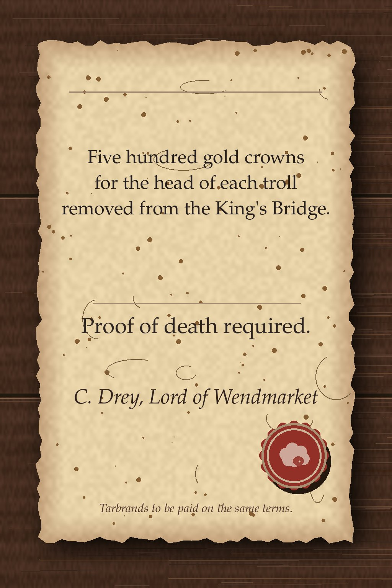

Casimir Drey, Lord of Wendmarket, agrees to pay the bearers the sum of five hundred gold crowns for the head of each troll removed from the King’s Bridge, to a total of two thousand for all four.
Proof of death is required: the head, or the tiara.
The bridge, being returned to peace, shall revert to the keeping of the House of Drey, as of old.
Signed and sealed, C. Drey.
(A smaller line, in a different ink: “Tarbrands to be paid on the same terms.”)